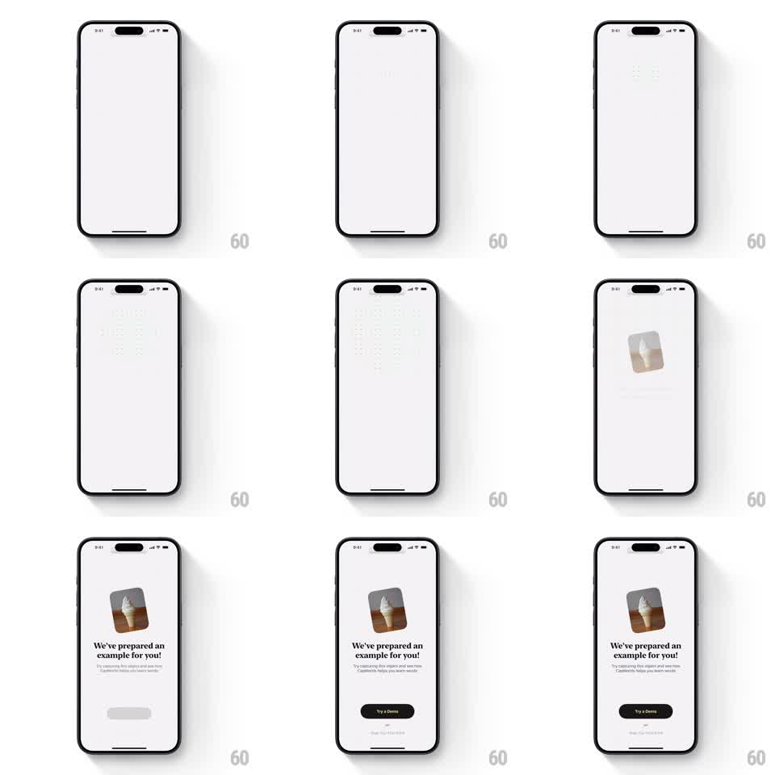

Media
Frame-by-frame

Rebuild this animation 1:1: an onboarding intro where a grid of faint dots ripples across the empty screen, then converges into a single memory card that springs into center stage, followed by staggered title text and a CTA.

Rebuild this animation 1:1: an onboarding intro where a grid of faint dots ripples across the empty screen, then converges into a single memory card that springs into center stage, followed by staggered title text and a CTA.
## Integration
Integration: stack-agnostic spec - springs given as stiffness/damping, timed motions as duration + curve; map every value to your framework and animation library of choice.
## Scene
Blank light screen. Phase 1: a regular dot grid (tiny circles, very low contrast) appears across the whole canvas. Phase 2: dots ripple and fade as one illustrated card (ice-cream photo, rounded corners) lands center. Phase 3: headline ("We've prepared an example for you!"), subline, and dark CTA button arrive.
## Motion spec
Pattern: multi-stage intro sequence, ~2.5s.
- Dots fade in with a radial ripple from screen center (each dot's delay = distance from center x 0.4ms, opacity 0 -> 0.35, 300ms).
- Ripple collapses: dots scale down and fade in a reverse radial wave (400ms) as the card scales 0.3 -> 1 at center (spring ~280/18, slight overshoot, 10deg -> 0deg rotation settle).
- Headline fades up (translateY 12 -> 0, 300ms) 150ms after the card lands; subline +100ms; CTA +120ms.
- Sequence runs once on first open.
## Calibration
- The dot ripple is nearly subliminal - keep opacity under 0.4.
- The card's rotation settle (a few degrees unwinding) gives it physicality; a straight scale feels corporate.
## Reduced motion
Card and text fade in together (300ms), no ripple.
## Don't miss
- Ripple timing is distance-based - center first, edges last.
- The CTA is dark on light and arrives last; nothing competes with it.